| 日付 | 2018年9月23日（日） - 2018年9月24日（月） | ||||
|---|---|---|---|---|---|
| 山域 | 東北の山 | ||||
| メンバー | 家族（妻、長女・7歳、長男・5歳） | ||||
| 山行形態 | 子連れ1泊2日キャンプ | ||||
| アクセス | 車 | ||||
| ルート (Map1) |
|
2週連続の3連休。先週は天候不順でどこにも出かけられなかったため、
今週は遠出して1泊2日の山旅に行くことにする。
ついでに今回は宿泊をキャンプにすることにする。
目的地は磐梯山。長い間登りたいと思っていた一峰だ。
1日目
八方台の駐車場は満車。予想はしていたが、かなりの混雑ぶりだ。
登山口から100m程度離れた路肩に車を停める。
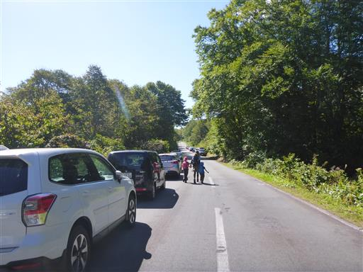
登山口に移動。準備を整えて登山道に入っていく。標高1194m。
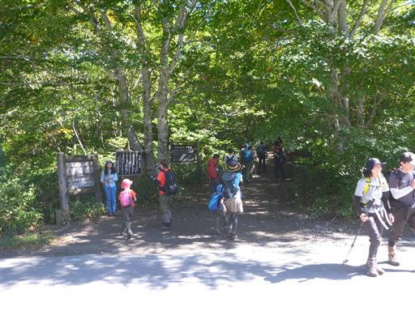
頭上には赤い実がたくさん見られる。
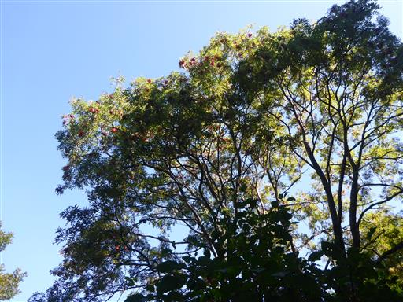
最初は緩やかな傾斜の美しい森の中を歩いていく。
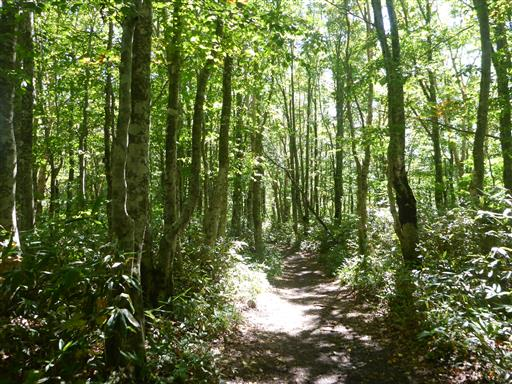
所々で登山道がぬかるみだらけになっている。
有難いことに、石や木が置かれている。
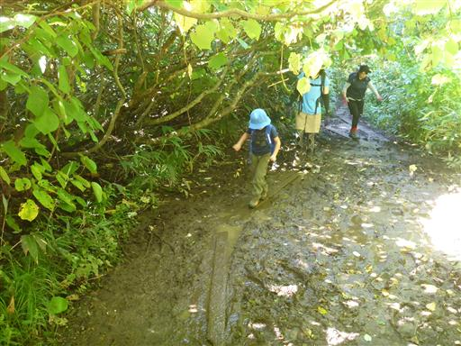
しばらく歩くと森を抜けて、目指す磐梯山が目の前に現れる。
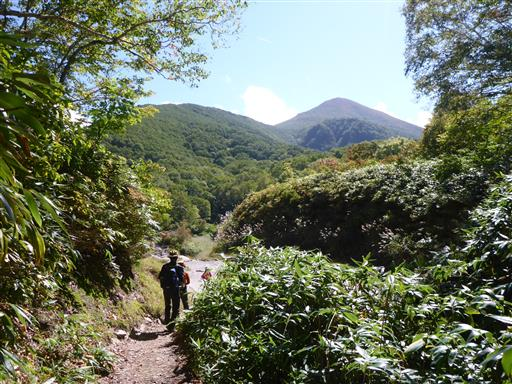
ここは中の湯と呼ばれる場所で、周囲は硫黄臭が漂っている。
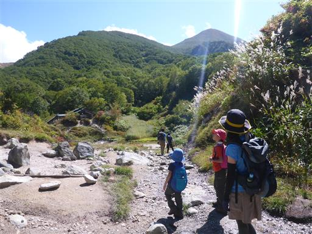
地面からポコポコと泡が出続けている。
触っても温かくはないが、ミニ温泉みたいだ。
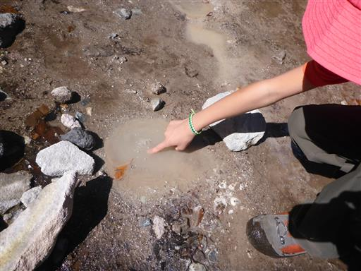
窪地には少々水が溜まっている。
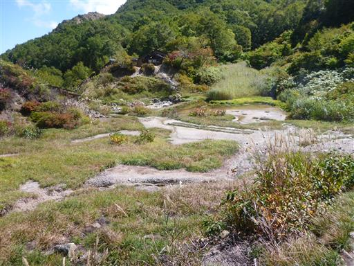
この辺りはかつて一軒宿があったが、現在は廃業していて廃墟になっている。
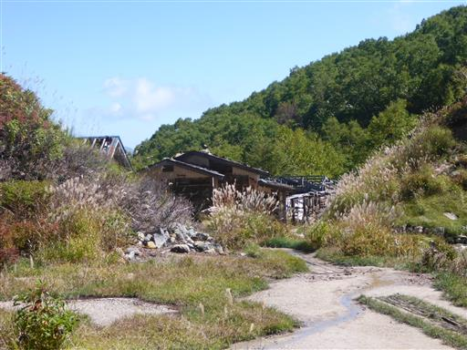
中ノ湯から先に進む。足元にはリンドウの花が咲いている。
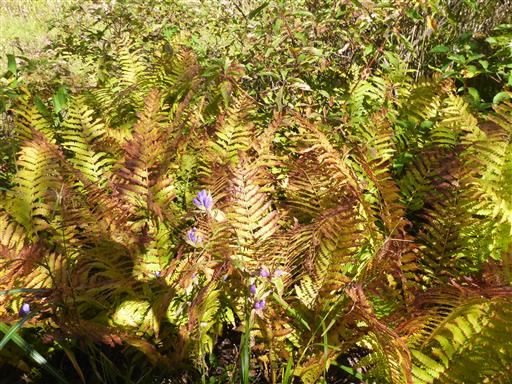
岩が散在する登山道。だんだんと傾斜がきつくなってくる。
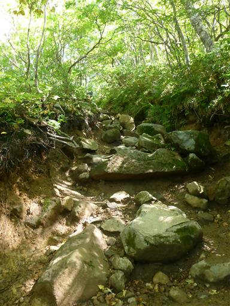
途中で大きく展望が広がる。
眼下に広がるのは桧原湖。1888年の磐梯山噴火でできた湖だ。
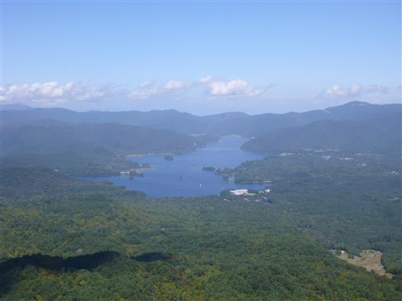
こちらは吾妻連峰。標高2000mを超える巨大な山塊だ。
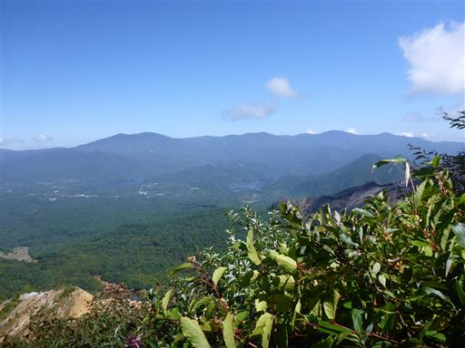
林床を笹に覆われた美しい風景が広がる。
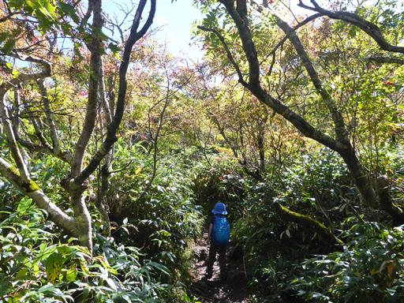
稜線の分岐点に到着。ここには岡部小屋と弘法清水小屋がある。
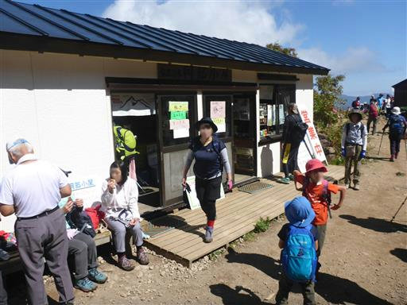
休憩するのによい場所で、多くの登山者が休んでいる。
向こう側に見えるのは磐梯山のもう1つのピーク、櫛ヶ峰だ。
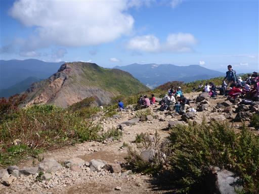
振り返ると磐梯山の山頂が見える。ここから一登りで山頂だ。
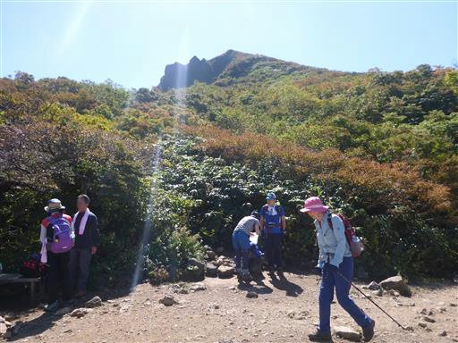
最後の登りに取り掛かる。ここからは急傾斜の道が続く。
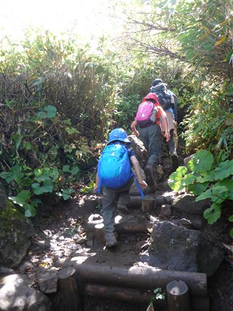
あちらこちらで赤い実が見られる。ナナカマドだろうか？
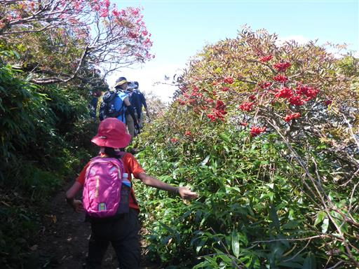
途中で登山道は渋滞し出す。
6本ある登山道のうち、5本は最後にこの道に集中しているため、仕方がない。
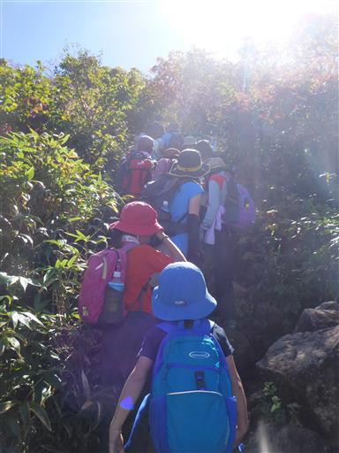
急斜面の崖。荒々しい噴火の痕跡だ。
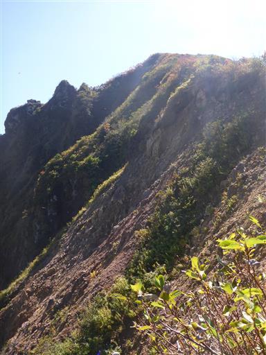
渋滞の列に付いて行き、磐梯山の山頂に到着する。標高1816m。
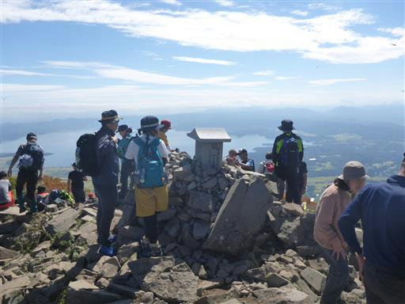
山頂から見渡せる景色は素晴らしい。
眼下に広がるのは猪苗代湖。日本で4番目に大きい湖だ。
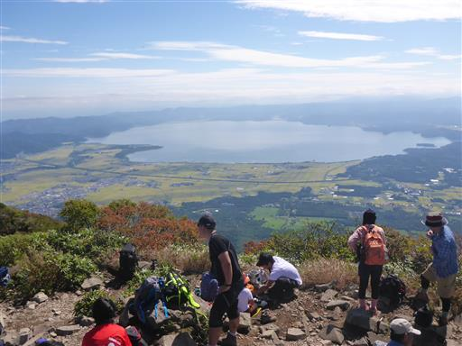
櫛ヶ峰も良く見える。こちらの方がだいぶ標高が高い。
磐梯山がこのような形になったのは、1888年の大噴火で山体崩壊を起こしたためだ。
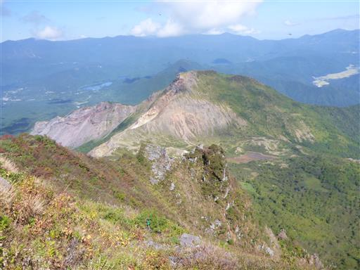
こちらは猫魔ヶ岳方面。磐梯山の隣にある火山だ。
山腹の斜面にはスキー場がたくさん見られる。
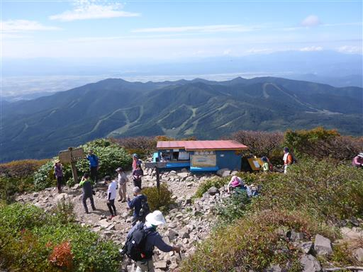
もうちょっとゆっくりしたかったが、娘がトイレに行きたいと言い出したため、下山を開始する。
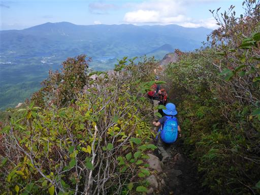
眼下の桧原湖が美しい。今夜は湖近くのキャンプ場に泊まる予定だ。
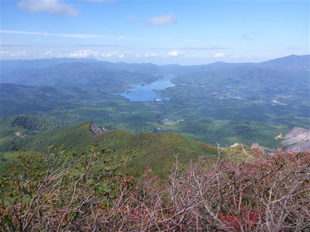
山頂周辺は紅葉が進んでいる。
木がない岩山というイメージがあったが、案外紅葉がきれいだ。
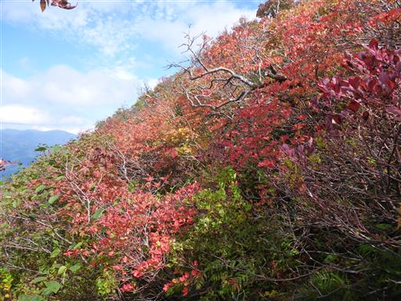
あと2週間くらい経つと山全体が紅葉しそうだ。
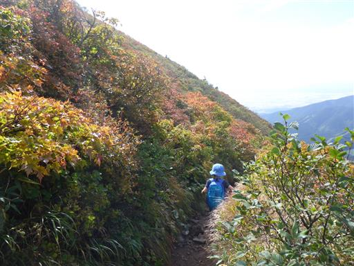
小屋まで戻ってくる。登山者の数は増えて大賑わいだ。
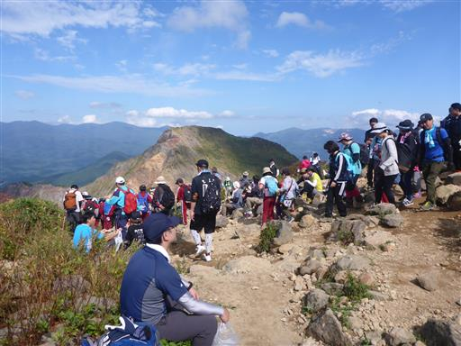
地元小学生の団体登山一行が下りて行ったため、
少し時間差ができるようここで遊ぶことにする。
子供たちは落ちている赤い実を拾って遊んでいる。
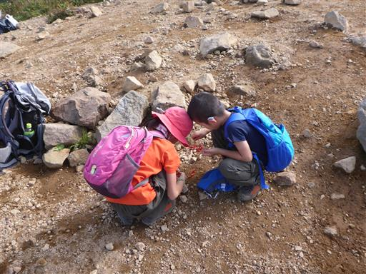
多くの登山者が列を成して下っていく。

20分ほど遊んだら下山開始。
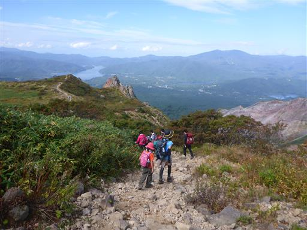
空にはうろこ雲が広がっている。秋らしい空模様だ。
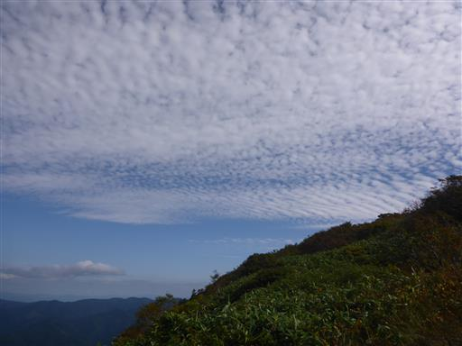
櫛ヶ峰が近づいてくる。近くで見るとかなりの迫力だ。
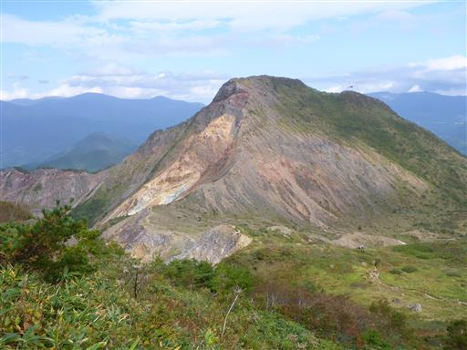
振り返って磐梯山の山頂を望む。ここから見ると穏やかな姿だ。
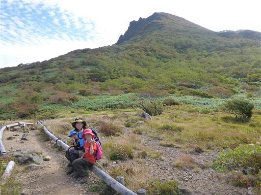
地図によると、この辺りはお花畑が広がるようだ。
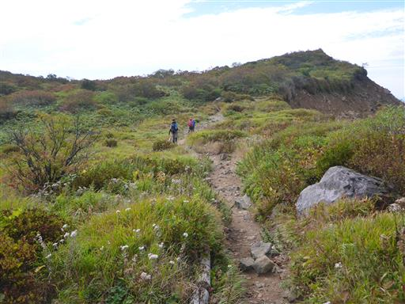
花の季節ではないため、ヤマハハコくらいしか咲いていない。
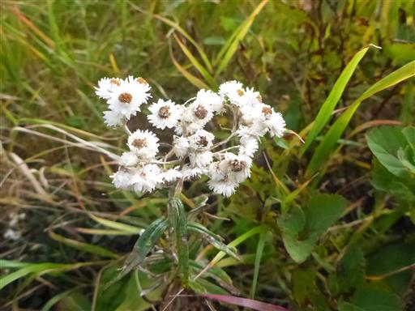
しばらく下ると渋滞に突き当たる。完全に足が止まる時間帯も多く結構つらい。
何も3連休の中日に団体登山をしなくても…というのは勝手な意見だが、これには参ってしまった。
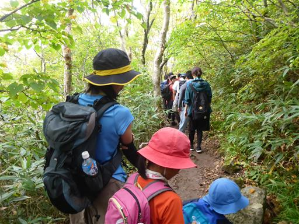
中ノ湯で団体を抜き、最後はゾロゾロと歩いていく。とにかく登山者の数が多い。
素晴らしい展望と大混雑の登山道、正と負の2つの側面を見た磐梯山登山だった。
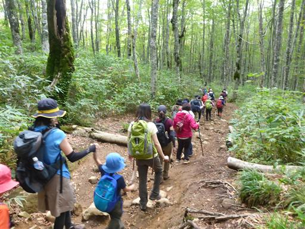
裏磐梯の休暇村に移動。本日はここのキャンプ場で泊まる予定だ。
ホテルやキャンプ場がある広大な施設だ。
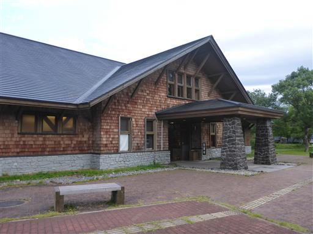
フリーサイトにテントを張る。
予約をしておいたのだが、受付で予約を確認されなかった。案外アバウトだ。
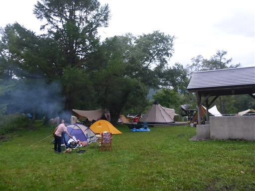
お風呂は香の湯に行く。気持ちの良い露天風呂だ。
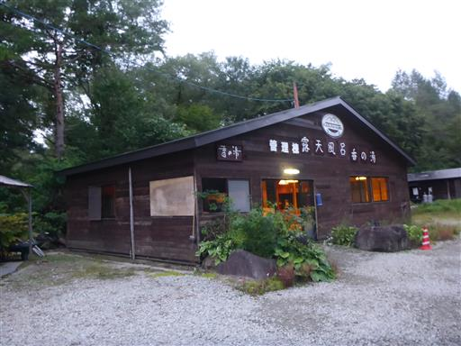
夕飯は「イル レガーロ」でとる。パスタの美味しいイタリアンの店。
今回は外食利用の手抜きキャンプだ。
帰りのコンビニでお酒を買い、キャンプ場に戻って一服してから就寝する。
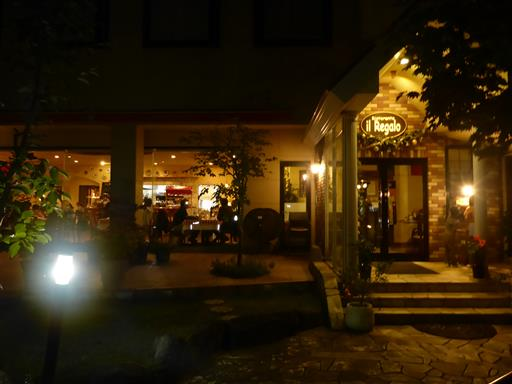